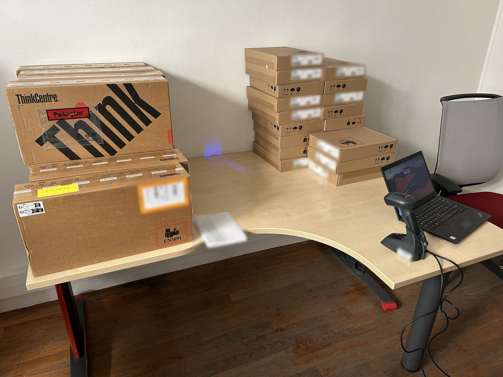

Étape 1 sur 6
Inventaire des nouveaux postes
Donner une identité unique à chaque machine avant son déploiement.
Contexte
L'entreprise a acquis une nouvelle flotte de postes (fixes et portables) pour remplacer des machines obsolètes. Avant même la mastérisation, il fallait intégrer ce matériel au système de gestion de parc.
Objectifs
- Attribuer un identifiant de poste unique à chaque machine.
- Récupérer les identifiants matériels : numéro de série et adresse MAC.
- Préparer un fichier d'import structuré pour alimenter GLPI.
- Garder la traçabilité du matériel sur toute sa durée de vie (statut, attribution, localisation).
Démarche
- Banc de préparation : réception des postes et espace de travail dédié.
- Étiquetage : une étiquette d'identification unique, issue d'un stock sécurisé, collée sur chaque machine.
- Capture rapide : une douchette (lecteur de codes-barres) scanne le numéro de série et l'adresse MAC, sans erreur de saisie. L'adresse MAC est indispensable au déploiement PXE et à la gestion réseau.
- Consolidation : un fichier Excel relie le nom du poste, le modèle, le numéro de série et l'adresse MAC.
Résultat
Un fichier d'inventaire complet et fiable, prêt à être importé en masse dans GLPI, et des machines identifiées dans les outils du système d'information (GLPI, Active Directory, SCCM) pour suivre leur cycle de vie.
Captures

Annexes
Compétences mobilisées
- Organisation et logistique
- Gestion de parc
- Excel